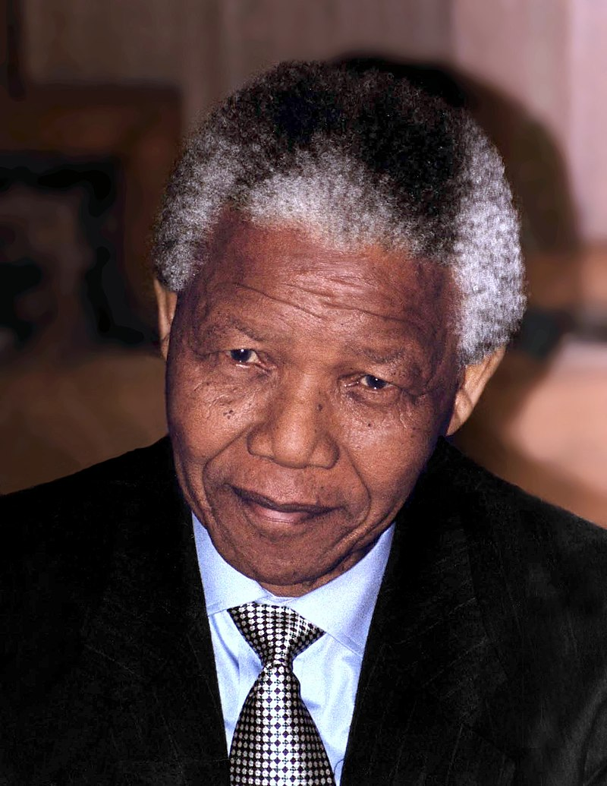

Nelson Mandela
Advogado Líder Presidente

Nelson Rolihlahla Mandela (Mvezo, 18 de julho de 1918 – Joanesburgo, 5 de dezembro de 2013) foi um advogado, líder rebelde e presidente da África do Sul de 1994 a 1999, considerado como o mais importante líder da África Negra, vencedor do Prêmio Nobel da Paz de 1993,[1] e pai da moderna nação sul-africana,[2] onde é normalmente referido como Madiba (nome do seu clã) ou "Tata" ("Pai").
- 1918 - Nascido em 18 de julho de 1918
- 1925 - Ele inicia ensino na escola primária nas proximidades de Qunu, e passa a usar o nome Nelson
- 1942 - Com o apoio de companheiros como Walter Sisulu e Oliver Tambo, fundou a Liga Jovem do CNA (Congresso Nacional Africano).
- 1944 - Ajuda a fundar a liga juvenil do CNA e se casa com Evelyn Ntoko Mase, a primeira de suas três mulheres.